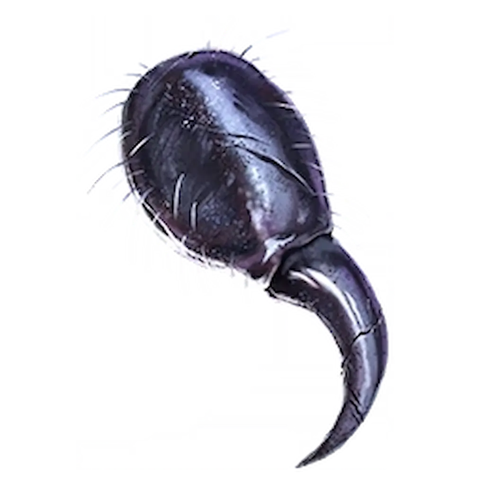

Musicie grać w trybie Klątwa na poziomie trudności co najmniej Tier 1.

Aby wyzwanie w ogóle się aktywowało, potrzebujecie konkretnego zestawu Perk-a-Cola i ulepszeń:
Relikt wymaga od Was zabójstwa Oskara w bardzo specyficzny sposób:
Jeśli zrobicie to dobrze, usłyszycie śmiech Mr Peaks.
Udajcie się do Library (Biblioteka). Naprzeciwko automatu ze Stamin-Upem znajdziecie portal do próby.
PRO TIP: Choć standardowe perki znikają, Eternal Perks (Wieczne atuty) zostają z Wami podczas próby! Zróbcie jak najwięcej zadań TED-a przed wejściem, by mieć tę przewagę.
To prawdziwa miazga dla portfela.